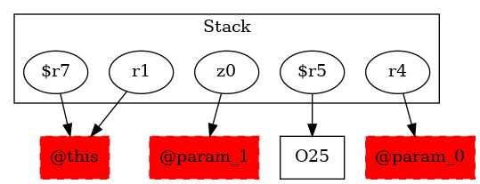

-1 : r1 := @this: Test3
-1 : r4 := @parameter0: testcase.Test3
-1 : z0 := @parameter1: boolean
25 : $r5 = new testcase.Test3$MyException
-1 : $r7 = (testcase.Test3) r1 ->class soot.jimple.internal.JAssignStmt {Left: class soot.jimple.internal.JimpleLocal, Right: class soot.jimple.internal.JCastExpr}
25 : specialinvoke $r5.|testcase.Test3$MyException: void |init|(testcase.Test3)|($r7)
26 : $r6 = new testcase.Test3
26 : specialinvoke $r6.|testcase.Test3: void |init|()|()
26 : $r5.|testcase.Test3$MyException: testcase.Test3 s| = $r6
27 : if z0 == 0 goto return
28 : throw $r5
30 : return
